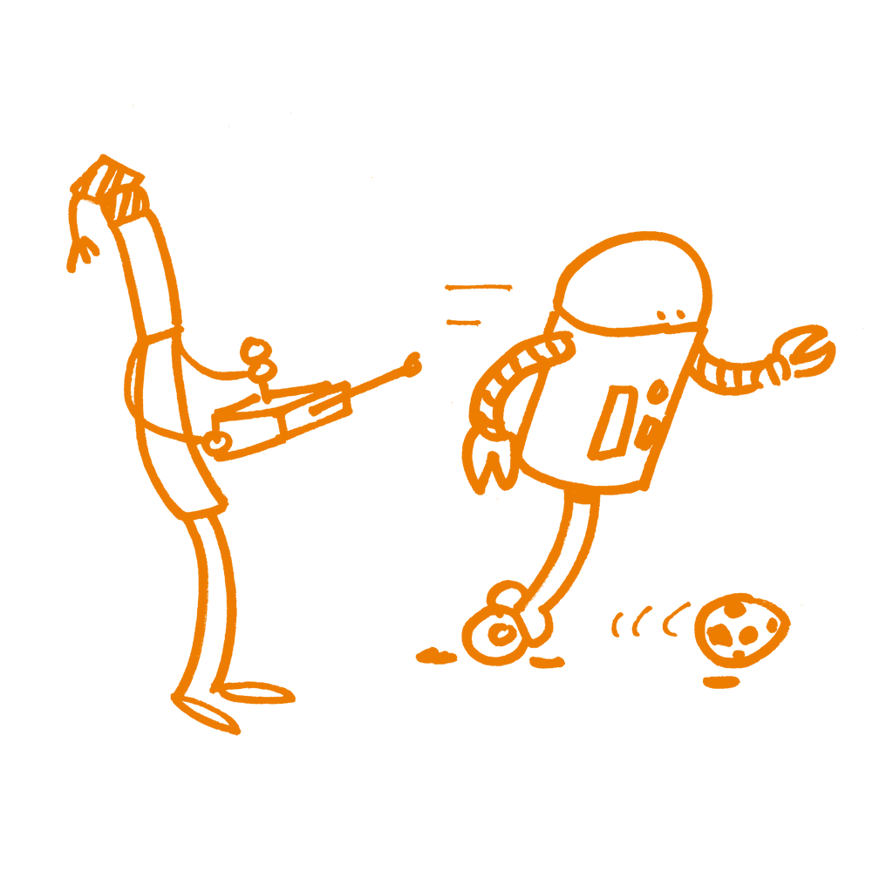
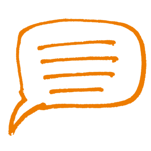

Processi di apprendimento e formazione
Questo capitolo fornisce un quadro di riferimento delle strategie didattiche, una guida pratica per la progettazione di un corso e una panoramica delle teorie pedagogiche, focalizzandosi su tre seguenti concetti chiave della didattica e della formazione:
Preparazione
Esecuzione
Riflessione
Prima ancora del corso in sé stesso, ciò di cui insegnamento e formazione si occupano è la preparazione. Questa include la selezione dei contenuti e dei metodi didattici più appropriati e della loro organizzazione al fine di ottenere la massima efficacia ed impatto dal percorso di formazione. Solo in un secondo momento, l'insegnamento consiste nell'erogazione del corso (il modo in cui si agisce e interagisce con i partecipanti). Anche nel caso in cui si fosse perfettamente preparati su un certo argomento, è preferibile evitare di iniziare il corso prima di aver terminato la fase di preparazione. Potrebbe inoltre essere necessario testare il contenuto, in particolare le esercitazioni pratiche. Durante il corso sarà necessaria molta flessibilità, perché di rado le cose vanno secondo le proprie aspettative. Per finire, la didattica riguarda anche la valutazione e l'autovalutazione a fine corso. Con molta probabilità è necessario dedicarsi allo stesso corso o ad un corso similare più volte, in particolare se la valutazione risulta positiva.
Per una migliore preparazione, è opportuno riflettere su ciò che è andato bene e su ciò che invece non ha funzionato e usare questa valutazione per calibrare la preparazione e l’erogazione dei corsi strada facendo. In breve, in ogni corso c'è un "prima", un "durante" e un "dopo", in una sorta di processo ciclico come avviene per il processo scientifico stesso. Questo capitolo fornisce una guida pratica per i formatori su come preparare e tenere dei corsi destinati a tipologie di platea diversi: quali sono i principali ostacoli da superare e quali sono i principali problemi da tenere presenti quando si prepara un evento di formazione.
Alcune riflessioni prima di iniziare
I paragrafi che seguono vertono principalmente sul primo aspetto (la preparazione)\; in seguito verranno fornite indicazioni su come pianificare e gestire il corso. Per cominciare, verranno presentate alcune questioni teoriche per dare un'idea di cosa significa insegnare e apprendere e di quanto l'insegnamento degli adulti differisca dall'insegnamento degli adolescenti o dei bambini.
Formazione Vs.insegnamento
L'insegnamento, rispetto alla formazione, si basa prevalentemente su concetti teorici; la formazione invece rimanda all'applicazione pratica della conoscenza (ovvero allo sviluppo di competenze).
L'insegnamento cerca di trasmettere conoscenze nuove; la formazione correda invece la teoria che si è appresa con strumenti e tecniche finalizzate all’acquisizione di un determinato set di competenze.
L'insegnamento, di solito, si svolge in un contesto scolastico o accademico; la formazione invece è associata a corsi brevi e intensivi post-diploma e/o post-laurea.
Di solito, i docenti forniscono un feedback ai loro studenti; nella formazione invece sono i formatori a riceverlo.
Comunque...
La formazione è il processo attraverso cui si insegna e si apprende una competenza o un lavoro, e di fatto i formatori insegnano qualcosa. La formazione può essere pertanto considerata un’attività più ampia che può comprendere l'insegnamento.
L'insegnamento può includere anche attività e obiettivi tipici della formazione, come sessioni pratiche e dimostrazioni.
Anche se le tecniche didattiche possono a volte variare tra loro, la differenza tra formazione e insegnamento non dipende dal processo stesso, ma dal focus, che nella formazione -di solito- è più specifico.
Al fine di sviluppare competenze da professionista, una persona ha bisogno di comprendere i concetti teorici e avere una esposizione orientata alla pratica. Pertanto, l'insegnamento e la formazione sono concetti educativi ugualmente importanti e complementari.

Strategie
Ci sono diversi approcci teorici alla didattica e alla formazione, a volte influenzati anche dalla cultura in cui ci si trova. Ad alcune persone piace parlare e tenere conferenze. Ad altri piace ascoltare, ad altri no. Alcuni esercizi sono semplici e richiedono risposte chiare. Altri sono incentrati sulla risoluzione dei problemi e si concentrano sul dare ai partecipanti tempo e spazio per riflettere e trovare soluzioni. Alcuni corsi di formazione, infine, sono progettati per offrire ai partecipanti la massima libertà e permettere loro di essere il più creativi possibile. Valutare quanto un corso di questi sia stato più o meno di successo è più difficile da valutare.
Le quattro teorie dell'apprendimento più note sono: comportamentismo, cognitivismo, connettivismo e costruttivismo. Ognuna di queste descrive una diversa prospettiva su come le persone apprendono.
Questo diagramma semplificato riassume le loro caratteristiche principali in termini molto pratici:

Tratto da:
Per capire i processi di apprendimento può essere di aiuto anche il lavoro di Software Carpentry](https://carpentries.github.io/instructor-training/
Il “Connected Curriculum Framework”
Il recente movimento "Connected Curriculum Framework" si è prefissato l’obiettivo di modernizzare i metodi didattici e di adattarli allo studente del XXI secolo. Il fine generale del framework è di migliorare le relazioni tra la didattica rivolta agli studenti e i processi della ricerca scientifica, abbattendo inutili divisioni. Il Connected Curriculum Framework valuta gli scambi costruttivi, la ricerca attiva, la collaborazione e le interazioni tra studenti e ricercatori, oltre a quelle con università e comunità più ampie. Ciò porta interessanti spunti negli ambiti della scienza aperta, della scienza partecipativa e del crowdsourcing, ecc. Il “Connected Curriculum” è consultabile al seguente link
Quanto tutto questo può esserti utile?
E’ importante sapere che ci sono approcci differenti e che non si è obbligati a seguire una sola strategia; si può piuttosto decidere quale pratica didattica applicare in qualsiasi momento del corso di formazione per poi quindi valutarla.
Alla fin fine ciò che conta è la pratica. Potrebbe essere utile controllare il contenuto del corso e le esercitazioni pratiche in rapporto ad uno degli approcci teorici per scoprire se sono appropriati in un determinato momento e con un particolare platea.

Aspettative sul formatore
Chi partecipa ad un corso ha delle aspettative, che ne sia consapevole o meno. Oltre a quelle inter alia sui metodi didattici, i contenuti e le conoscenze pregresse, ci sono anche aspettative specifiche sul formatore.
La maggior parte degli studenti si aspetta che il formatore:
Sia entusiasta degli argomenti che sta insegnando.
Abbia una comprensione generale dei valori scientifici (o umanistici) di base e riconosca all’ “apertura” il ruolo di elemento intrinseco e centrale.
Comprenda l'importanza di fattori come la trasparenza della ricerca e la sua riproducibilità e le loro implicazioni sociali più ampie.
Abbia familiarità con l’intero processo di ricerca, compresa la pianificazione, le metodologie, la produzione, la comunicazione e la pubblicazione dei risultati.
Conosca i diversi tipi di processi di ricerca e di output che possono essere condivisi, inclusi dati, codice e software, documenti, comunicazione, flussi di lavoro, domande di finanziamento e piani di gestione dei dati.
Sia consapevole delle politiche, dei regolamenti e delle leggi che potrebbero influenzare i ricercatori nel mettere in pratica la Scienza Aperta.
Comprenda le pressioni che derivano da politiche istituzionali, o dalla loro mancanza, che modellano il modo in cui i ricercatori gestiscono dati e risultati, dalla fase di acquisizione a quella di condivisione e disseminazione.
Capisca le aspettative che emergono dal tessuto sociale riguardo all'uso delle risorse e dei risultati delle attività scientifiche, così come il loro impatto sulla scienza partecipativa, la loro corretta divulgazione pubblica, l'influenza che possono avere su docenti e formatori.
Sia in grado di insegnare e che abbia una profonda conoscenza della Scienza Aperta (in realtà, questo è ciò di cui tratta questo manuale).
- Fornisca link a documenti e risorse online che supportino i principianti.
Destinatari del corso
Un modo costruttivo per iniziare un percorso formativo sulla Scienza Aperta è rivolgersi a un pubblico che abbia già qualche informazione e/o sia già interessato all'argomento. Generalmente, queste persone potrebbero essere più aperte all'idea di Scienza Aperta. Iniziare la formazione con una platea motivata ha diversi vantaggi:
Sapere che la platea è interessata per davvero all'argomento facilita l’introduzione ad una nuova area / argomento di formazione. Si prenda in considerazione l’idea di svolgere un sondaggio per valutare questo aspetto a priori.
Una platea motivata molto probabilmente contribuisce alla discussione e fornisce suggerimenti utili su come sviluppare ulteriormente il piano di formazione.
Destinatari motivati possono diventare degli ambasciatori del corso di formazione.
Cosa dovete sapere sulla platea:
Perché un qualsiasi evento formativo sia costruttivo, è importante mantenere un ambiente inclusivo e tenere in considerazione i diversi background dei potenziali partecipanti. Come rendere un workshop inclusivo? Consulta la Lista di controllo per l'organizzazione di una conferenza redatta da SPARC.
Il fatto che i partecipanti si conoscano a priori o meno può impattare sulla dinamica del gruppo e sul tipo di attività che si vogliono condurre.
La motivazione dei destinatari dipenderà dal fatto che la loro partecipazione sia volontaria o meno.
Il contenuto e lo stile delle presentazioni dipenderà dal livello di conoscenza della platea degli argomenti di discussione previsti.
Il fatto che la platea sia abituata a uno specifico metodo didattico potrebbe influenzare il modo in cui i partecipanti reagiscono ad uno stile di formazione molto diverso.
Il numero dei partecipanti:
Definite un numero massimo di partecipanti in base allo spazio disponibile/capacità e al tempo disponibile per le esercitazioni pratiche.
Il numero dei partecipanti avrà un impatto sul modo in cui interagiranno tra loro e affronteranno il processo di apprendimento.
Se si tende ad una platea più ampia, è opportuno prendere in considerazione l’opportunità di creare dei sotto-gruppi e valutare le necessità logistiche ad essa collegate.
È opportuno valutare se l’evento sarà aperto al pubblico o ristretto ai membri afferenti all’ente ospitante. Un evento pubblico può aiutare ad aumentare e diversificare la partecipazione, mentre limitarne l’accesso può concentrare l’attenzione su argomenti specifici. Per i partecipanti afferenti ad una stessa istituzione c’è maggiore probabilità che si conoscano già tra loro.
È opportuno prendere in considerazione il ricorso a videoconferenze / webinar, per raggiungere un pubblico più ampio. È concretamente più facile mantenere viva l’attenzione in un piccolo gruppo in presenza e creare e approfittare di un sentimento di autentica connessione.
Valutate quale sia il modo migliore per avvicinarsi a target di pubblico diversi (meeting, workshop faccia a faccia, webinar, newsletter, social media, ecc.)
In presenza di un pubblico eterogeneo, per soddisfare le diverse esigenze dovete tenere presente /conoscenze e/o responsabilità delle parti interessate
finanziatori, istituzioni/datori di lavoro, ricercatori (studente, dottorando, ricercatore, responsabile del progetto)
supporto (ufficio ricerca, biblioteca, IT)
partner commerciali in un progetto
Al termine del corso, i partecipanti dovrebbero:
- avere acquisito una migliore comprensione pratica dei concetti chiave e delle corrispondenti applicazioni della Scienza Aperta
- fare consono uso di quanto appreso durante la formazione, aumentando così l'impatto nel proprio ambiente professionale.
- essere capaci di fare rete con i rappresentanti/sostenitori delle diverse discipline e di agire all’interno di un'iniziativa globale di Scienza Aperta.
Insegnare agli adulti
La ricerca accademica è svolta da persone adulte pertanto chi partecipa a qualsiasi corso sulla Scienza Aperta è molto probabilmente un uomo/donna adulto, spesso con una formazione di alto livello alle spalle. È quindi interessante vedere come l'insegnamento a bambini o adolescenti (pedagogia) differisce da quello degli adulti (andragogia). Il “Canadian Literacy and Learning Network” ha svolto un lavoro interessante su questa differenza e lo ha ricapitolato in sette principi:
Gli adulti devono voler imparare. Ciò vuol dire che la motivazione personale e le aspettative sono decisive e potrebbe valere la pena conoscerle prima dell’inizio del corso.
Gli adulti imparano solo ciò che sentono di aver bisogno di imparare. Gli adulti, nel loro approccio all'apprendimento, sono pratici e vogliono sapere:"Concretamente a cosa mi servirà?" E’ necessario quindi essere pratici e diretti.
Gli adulti imparano facendo. Questo vale anche per i bambini, ma la partecipazione attiva e immediata è più importante negli adulti.
L'apprendimento negli adulti si concentra sui problemi e i problemi devono essere realistici. I partecipanti verranno spesso con un problema e sarà compito del formatore scoprire le lacune e provare a colmarle.
L'esperienza influisce sull'apprendimento degli adulti. Gli adulti hanno più esperienza dei bambini, sia negativa che positiva. Puoi usare questo bagaglio di esperienze cercando di evitare associazioni negative.
Gli adulti imparano meglio in una situazione informale. Di solito, i giovani in età scolastica devono seguire un curriculum. Spesso gli adulti imparano solo ciò che sentono di dover sapere. Si dovrebbe quindi cercare di coinvolgere la platea nel processo di apprendimento. Per fare questo, è necessario creare un ambiente rilassato, informale e stimolante.
Gli adulti vogliono una guida. Gli adulti vogliono informazioni che li aiutino a migliorare la loro situazione o risolvere i problemi, non che gli venga detto cosa fare. Preferiscono scegliere in base alle proprie esigenze.
I formatori saranno pertanto tenuti a
Fornire indicazioni su dove i ricercatori potranno trovare informazioni, strumenti e supporto.
Preparare materiale online con indicazioni chiare, comprensibili e aggiornate.
Raccogliere degli strumenti (o dei modelli per crearli) efficaci, utilizzabili (e reperibili).
Riassumendo, l’interesse degli adulti è focalizzato sull’ampliamento delle proprie conoscenze e considerano la formazione come una pratica ad personam, utile ad ampliare le proprie competenze. Agli adulti piace essere rispettati in quanto tali e che le loro aspettative siano soddisfatte una per una, nel modo più esaustivo possibile.
La Tassonomia di Bloom
I risultati di apprendimento sono spesso il modo più diretto per stabilire la qualità di erogazione di un’attività di formazione: i bisogni formativi vengono adattati in modo che la maggior parte dei risultati attesi sia raggiunta dalla maggioranza della platea. Gli studenti pervengono a risultati di apprendimento in modi diversi, spesso valutatati quantitativamente.
Il fatto di dettagliare i risultati rientra nella concezione che la formazione sia parte di un processo cognitivo. Nel 1956, Benjamin Bloom creò una tassonomia dei livelli cognitivi, modificata poi nel corso del tempo. Si tratta di uno strumento molto utile per definire obiettivi didattici coerenti e adattabili a qualsiasi materia. Di solito, i salti tra livelli cognitivi non contigui sono considerati inaccettabili. La tassonomia aiuta ad identificare delle situazioni potenzialmente difficili, dalle quali la formazione non produce risultati positivi perché il livello cognitivo dell’obiettivo didattico non corrisponde a quello della valutazione utilizzata.

La versione aggiornata (al 2001) è disponibile qui La tassonomia di Bloom è una classificazione a sei livelli ed è utile perché dà un supporto concreto a chi voglia costruire una solida attività didattica e formativa. In aggiunta alla tassonomia di Bloom si possono trovare diversi tipi di supporto alla progettazione di un’attività didattica, come le terminologie annotate, verbi da utilizzare o da evitare nella pianificazione del corso e nella composizione di test di valutazione, ecc.
Finalità didattiche e risultati di apprendimento
Questi due termini sono spesso usati come sinonimi dalla comunità dei formatori. Le finalità includono obiettivi o scopi e i risultati effetti tangibili, possono sovrapporsi, ma non sono realmente la stessa cosa.
Durante la progettazione del corso è bene concentrarsi in primo luogo sugli obiettivi didattici e solo in seguito descrivere i risultati che la platea dovrebbe conseguire. Potrebbero sovrapporsi qua e là o se, come nella maggior parte dei casi, un obiettivo didattico racchiude uno o più risultati. E’ opportuno che le esercitazioni pratiche vengano progettate intorno a risultati specifici.
Cerchiamo di fare chiarezza e dipanare le ambiguità:
Finalità didattiche
Descrivono le finalità e gli obiettivi didattici del formatore
Stabiliscono propositi e scopi del corso
Sono focalizzate su contenuti e competenze che la classe o il programma ritiene importanti
Possono descrivere cosa faranno i formatori
Dovrebbero essere specifiche e dettagliate
Risultati d'apprendimento
I risultati di apprendimento conseguiti dagli studenti registrano i “prodotti” complessivi del corso e sono la dimostrazione che gli obiettivi sono stati raggiunti.
I risultati di apprendimento sono delle affermazioni che descrivono o elencano le abilità, le competenze e le conoscenze che gli studenti hanno conseguito e che sono in grado di dimostrare una volta completato il corso.
I risultati esprimono capacità di pensiero di livello superiore che integrano i contenuti e le attività del corso e che possono essere osservati in comportamenti, abilità o conoscenze discretamente utilizzabili alla fine del corso.
I risultati sono esattamente ciò che le valutazioni sul corso devono dimostrare - ovvero ciò che lo studente sarà in grado di fare al termine del corso.
Un risultato didattico valutabile può essere mostrato o analizzato e valutato in base a dati criteri.
I risultati sono criteri chiari e misurabili per guidare l'insegnamento, l'apprendimento e il processo di valutazione nel corso.
(Adattato da http://provost.rpi.edu/learning-assessment/learning-outcomes/objectives-vs-outcomes)
Per gli obiettivi didattici della Scienza Aperta, si può consultare questo documento FOSTER (vedi pagine 13 e 14)
Esempio di finalità didattica:
- "Imparare ad utilizzare i processi di valutazione e di feedback nell’attività formativa con la massima efficacia”
Esempio di risultato di apprendimento:
- "Alla fine del corso lo studente sarà in grado di progettare un esercizio di formazione e una strategia per valutarne l'efficacia"

Motivazione e demotivazione
Una delle componenti chiave di un evento di formazione è assicurarsi che la mancanza di fiducia che i partecipanti potrebbero avere quando vengono introdotti in un nuovo campo (la Scienza Aperta, in questo caso) non li scoraggi dal proseguire. Anche se alcuni partecipanti hanno generalmente familiarità con i concetti presentati nell'evento formativo, è importante percepire l’eventuale presenza di un senso di confusione in alcune persone. Ammettere la liceità dei loro dubbi rappresenta la chiave per incoraggiare una mentalità predisposta alla crescita e accrescere la motivazione ad accettare e sostenere le pratiche della Scienza Aperta.
Ci sono diverse strategie che possono essere utilizzate durante l'evento di formazione per motivare i partecipanti. (Tratto da "The Carpentry Instructor Training.
Strategie per costruire valore
Creare un nesso tra il contenuto del corso e gli interessi o valori di chi vi partecipa.
Fornire compiti e case study autentici, reali, preferibilmente legati al background e agli interessi diretti dei partecipanti.
Fornire agganci rilevanti alle attuali vite accademiche dei partecipanti.
Trasmettere passione e entusiasmo per la Scienza Aperta.
Strategie per costruire aspettative positive
Accertarsi che obiettivi, valutazioni e strategie didattiche siano allineati e coerenti tra loro.
Per avere un immediato riscontro positivo, i concetti devono essere messi in pratica in esercitazioni pratiche e tutorial.
Strategie per l'autoefficacia
Fornire ai partecipanti più opzioni e dare loro la possibilità di operare delle scelte.
Lasciare ai partecipanti degli spazi di riflessione e momenti utili alla creazione di connessioni tra la Scienza Aperta e il proprio lavoro.
Guida pratica
Maggiori e concrete informazioni sulla pianificazione e l'esecuzione di un corso di formazione sulla Scienza Aperta sono disponibili nei capitoli Aspetti organizzativi e Esempi & guida pratica: adotta, adatta, sviluppa.
La progettazione di un corso
Per cominciare, la pianificazione di un corso dovrebbe partire dalla pianificazione delle finalità didattiche o dei risultati.
Pianificare in base agli obiettivi didattici, piuttosto che in base ai risultati
La tecnica SMART è utile per specificare gli obiettivi da raggiungere ed è utilizzata anche nella gestione dei progetti. SMART è un acronimo che corrisponde a cinque criteri: Semplicità - Misurabilità - Ambizione - Realtà – Tempistica.
• L’obiettivo è semplice se può essere compreso da una persona che non ha familiarità con l'argomento. E’ opportuno spiegare a priori ai partecipanti cosa stanno per imparare: di solito è una buona idea presentare gli obiettivi didattici all'inizio di una lezione. Semplice significa che l'obiettivo può essere riassunto in un’unica breve frase.
L’obiettivo è misurabile se è possibile determinarne il raggiungimento con obiettività. La misurabilità impedisce obiettivi vaghi come "gli studenti devono comprendere la scienza aperta", troppo ampio e difficile da misurare viste le molte diverse componenti. Usare viceversa dei verbi che indicano azioni fattibili: identificare, disegnare, nominare, spiegare, calcolare ecc. I verbi utili ad una stesura efficace degli obiettivi didattici sono stati classificati dalla tassonomia di Bloom. La misurabilità è utile al formatore e ai partecipanti dei corsi a valutare o autovalutare i progressi fatti.
L’ obiettivo è ambizioso se riesce a mettere alla prova i partecipanti del corso: ci sono dei vantaggi concreti nel raggiungerlo? Si vuole che il corso serva ad ampliare gli orizzonti dei partecipanti? In che modo può rappresentare un vantaggio? Essere ambiziosi significa poter rispondere alla domanda: che cosa si può imparare che non potrebbe essere appreso altrove? Se si desidera prendere posizione e difendere il proprio punto di vista, probabilmente l’obiettivo che ci si è posti è ambizioso.
L’obiettivo è realistico se si ritiene che possa essere raggiunto nel tempo prestabilito. Per essere realistico, è opportuno chiedersi: i partecipanti del corso hanno le conoscenze di base necessarie? Quali sono le competenze pratiche di cui hanno bisogno? Quali prerequisiti tecnici sono indispensabili? Il formatore è preparato per domande impreviste? L’obiettivo “conoscere tutte le licenze Creative Commons in un'ora” può realisticamente essere conseguito da un gruppo, ma fuori dalla portata di un altro.
L’obiettivo è pianificato se è stato predisposto un quadro temporale entro il quale si è stabilito che l’obiettivo deve essere raggiunto entro un periodo di tempo determinato. I formatori alle prime armi spesso sforano il tempo a loro disposizione. Impostare dei limiti di tempo per gli obiettivi didattici aiuta a strutturare la lezione, a riconoscere e a reagire a ritardi imprevisti. Un modo efficace per pianificare deve avere uno scadenziario dettagliato o un programma delle lezioni.
Adattato da SMART Goals, How to create objective, measurable project goals di Kristian Rother.
Pianificazione basata sui risultati, piuttosto che sugli obiettivi
Si tratta di adottare il metodo di progettazione a ritroso, nota come Backward design, una tecnica per pianificare le lezioni che enfatizza i risultati:
Si inizi con le finalità didattiche.
Si stabilisca quali aspetti si prenderanno in considerazione per dimostrare che gli obiettivi sono stati raggiunti (valutazione sommativa, cfr. il paragrafo Valutazione post-formazione che segue).
Si scelga il format migliore e progetta il contenuto per preparare i partecipanti a ciò che dovranno fare durante la valutazione sommativa.
Il contenuto deve essere strutturato in maniera via via sempre più complessa ed essere quindi somministrato ai partecipanti insieme alla motivazione necessaria per colmare il divario tra ciò che sanno e ciò che devono imparare per completare la valutazione sommativa. (Software Carpentry Instructor Training).
La progettazione a ritroso ribalta lo schema progettuale "tradizionale". Nella pianificazione tradizionale del curriculum, viene creato e/o selezionato un elenco di contenuti che verranno insegnati. [4] Nella progettazione a ritroso, il formatore inizia con gli obiettivi didattici, crea o pianifica le valutazioni e solo alla fine formula il vero e proprio programma delle lezioni. I sostenitori del backward design hanno paragonato questo procedimento all'utilizzo di una "road map" [5] In questo caso, la destinazione viene scelta per prima e quindi la mappa viene utilizzata per pianificare il viaggio verso la meta desiderata. Al contrario, nella pianificazione tradizionale non esiste formalmente una destinazione stabilita a priori.
L'idea nella “progettazione a ritroso” è quella di puntare alla "meta finale" o verso quegli obiettivi di insegnamento che in genere garantiscono che il contenuto insegnato rimanga impresso e organizzato. Questo, a sua volta, mira a promuovere una migliore comprensione del contenuto e dei processi didattici da parti degli studenti. Il formatore si può concentrare su ciò che gli studenti devono imparare, su quali dati possono essere raccolti per dimostrare che gli studenti hanno raggiunto i risultati didattici desiderati (o standard di apprendimento) e su come garantire che gli studenti saranno in grado di imparare.
Il contenuto del corso
La raccolta dei contenuti
Prima di iniziare ad insegnare, è opportuno raccogliere e preparare i contenuti. Oggigiorno di contenuti ce ne sono a disposizione in grande quantità, e il problema non è tanto quello di trovare o creare contenuti quanto quello di trovare contenuti appropriati o rendere il contenuto proposto adeguato alle proprie esigenze e alle capacità della platea.
Si consulti il capitolo Esempi&guida pratica: adotta, adatta, sviluppa che contiene delle informazioni utili su come adottare, adattare e sviluppare il contenuto.
La concentrazione dei contenuti
Una delle maggiori sfide nella progettazione di corsi è calibrare il contenuto alla tipologia di formazione. Se si hanno solo due ore a disposizione, è opportuno fornire le principali informazioni su un determinato argomento durante il lasso di tempo convenuto. Di solito, il formatore ha tuttavia molte più conoscenze da trasmettere. E’ essenziale ridurre il contenuto ai punti chiave più importanti: cosa è veramente necessario sapere e quali sono solo dettagli o argomenti marginali? Si devono quindi stabilire le tematiche prioritarie ed essere trasparenti in merito a ciò che si è deciso di tralasciare informandone i partecipanti.
Infine è utile tenersi del tempo sufficiente per domande aperte, discussioni e la condivisione di esperienze tra i partecipanti. Sarà utile per ottenere le domande "giuste", che di solito sono molto più semplici di quanto ci si aspetti o più dettagliate e specifiche di quanto si era previsto.
Inizio della formazione
Presentazioni
All’inizio i relatori dovrebbero presentare in modo chiaro e conciso se stessi e i propri ambiti di competenza. Per quale motivo i partecipanti dovrebbero ascoltarli? Quali potrebbero essere le esperienze e competenze utili per la platea? Si dovrebbe quindi fornire una presentazione generale del corso: obiettivi, contenuti e risultati attesi - cosa potranno imparare i partecipanti e perché. Per stabilire un clima di fiducia è essenziale trasmettere sicurezza.
A seconda da quante persone è costituita la platea, dalla quantità di tempo disponibile e dal grado di utilità di interazione con il pubblico, potrebbe essere utile iniziare con una breve presentazione dei partecipanti (da sconsigliare per gruppi superiori a 15-20 persone). Questa è la fase in cui è più opportuno raccogliere le aspettative dei partecipanti, i loro pensieri, le loro aspettative e sondare il loro livello di esperienza (sempre che non sia stato fatto prima, ad esempio tramite un questionario online), e per valutare in che misura ciò corrisponda ai risultati che ci si aspetta e alla descrizione dei destinatari previsti o del target di riferimento). Se si riscontrano delle evidenti differenze, è proprio questo il momento più opportuno per adattare il programma. Se i partecipanti, ad esempio, sono più esperti del previsto, si possono trattare alcuni concetti della Scienza Aperta in maniera più veloce e dedicarsi maggiormente ad una discussione interattiva in cui sono le domande e le esperienze dei partecipanti ad essere al centro della discussione.
Non è assolutamente necessario adattare il contenuto del corso seduta stante; sarà sufficiente però chiarire a tutti i partecipanti che cosa verrà tralasciato.
Ancora una volta, le informazioni fornite da Software Carpentry potrebbero essere utili per creare l'ambiente giusto.

Rompere il ghiaccio
Iniziare la sessione di formazione con un’attività utile a rompere il ghiaccio può servire a stimolare i partecipanti e permettergli di conoscere il docente e gli altri membri del gruppo. Creare un ambiente didattico accogliente, amichevole e positivo consente alle persone di partecipare e imparare meglio nonché ad aiutarli a sentirsi più a proprio agio.
Mentre un’atmosfera positiva può essere favorita dalla scelta della migliore attività per rompere il ghiaccio, utilizzarne una non adeguata può essere causa di nervosismo e disagio; per questo motivo è consigliabile analizzare con attenzione i partecipanti e le potenziali dinamiche di un gruppo quando si opera una scelta. Le persone non dovrebbero sentirsi in imbarazzo o essere costrette a rivelare informazioni personali che non desiderano condividere. I gruppi possono essere sensibilmente eterogenei per età, status all’interno dell’ente di appartenenza, estrazione culturale e livello di istruzione. Tutte queste differenze incidono su quanto hanno in comune i membri dell’intero gruppo. È pertanto utile cercare di correlare le attività preliminari ai risultati didattici previsti (degli esempi sono disponibili al paragrafo Letture integrative.
Durante il corso di formazione
E’ opportuno circoscrivere i risultati attesi e dare sempre ai partecipanti delle linee di orientamento:
Dove siamo?
Dove vogliamo andare?
Quali argomenti tratteremo?
e stabilire un’alternanza equilibrata tra discorsi teorici sui contenuti del corso (massimo 20 minuti) e sessioni di attività pratica (Klaus Döring, 2008).
E’ opportuno fare in modo che i partecipanti parlino e condividano i loro pensieri e idee il più presto possibile. In altre parole, è bene che la didattica sia attiva e partecipata!
Didattica attiva
La didattica attiva è un metodo attraverso il quale gli studenti sono attivamente coinvolti nel processo di apprendimento. Si contrappone ad un apprendimento passivo delle lezioni e comprende le seguenti attività: lettura, scrittura, discussione, problem solving, analisi, sintesi e valutazione. La didattica attiva spesso implica l'apprendimento cooperativo con gli altri partecipanti.
Il fatto di usare dei metodi di didattica attiva nella formazione normalmente è un buon approccio. Il formatore è il secondo miglior giudice dei benefici di questo metodo; il primo giudice, è bene ricordarlo, è lo studente.
La didattica attiva aiuta a bypassare i diversi stili di apprendimento e altre problematiche collegate alla platea di partecipanti del corso. Anche se è più efficace per il raggiungimento di obiettivi di livello superiore, la didattica attiva affronta anche problemi cognitivi legati alla natura del contenuto e al modo di presentarlo, come è dimostrato dal diagramma che segue e che è frequentemente riportato in molti libri di testo e risorse online, noto come “Cono dell’esperienza o dell’apprendimento”.
La didattica attiva è più efficace nei livelli cognitivi più alti della Tassonomia di Bloom (Analizzare, Definire, Creare, Valutare) e corrisponde anche alla maggiore capacità di memorizzare: quello che viene detto, scritto o fatto (ossia, alla metà inferiore del Cono dell’apprendimento). Problemi cognitivi si presentano con maggiore facilità quando il contenuto di una lezione coinvolge più livelli alla volta e quando il contenuto esclude anche i livelli intermedi. Accostare il contenuto del corso con il cono d’apprendimento è un modo semplice per scoprire questi potenziali errori e permette di pianificare un uso maggiore di supporti visivi dove serve una memorizzazione dei contenuti più immediata. Quando la platea dei partecipanti rimane indietro, si può quindi usare questa tecnica per diagnosticare, cercare di individuare le cause e scegliere la soluzione più efficace.

Ludicizzazione “gamification”
Le radici del metodo della didattica attiva affondano nelle moderne teorie dell'apprendimento (in parte nel Costruttivismo e in alcune correnti del Connettivismo) e introducono tecniche di coinvolgimento didattico per rompere le barriere e abbattere quanti più ostacoli possibili. Ad esempio, la ludicizzazione di una unità didattica può portare gli studenti da un’acquisizione passiva del contenuto verso un pieno coinvolgimento, trasformando cioè il discente in qualcuno che fa un passo indietro e osserva il processo di apprendimento e il suo funzionamento. Un esempio di ludicizzazione nella formazione può essere il Key Terms un gioco didattico per il consolidamento dei concetti. Un altro esempio è disponibile in CURATE: The Digital Curator Game.
Coinvolgimento inclusivo
Come si possono coinvolgere i partecipanti che non intervengono? Un buon punto di partenza potrebbe essere quello di porre una domanda e aspettare almeno 30 secondi per le risposte (Mary Budd Rowe, 1986). Il risultato che si otterrà sarà che più persone parteciperanno alla discussione, la qualità delle persone sarà migliore e gli studenti meno reattivi avranno la possibilità di rispondere.
Un altro metodo per ottenere un coinvolgimento inclusivo è lo stack progressivo. Un moderatore sceglie chi parla tra i partecipanti che desiderano parlare e che non lo hanno ancora fatto, come succede di solito. Inoltre vengono scelte per prima le voci sottorappresentate, secondo genere e identità razziale.
Durante le discussioni (in gruppi più grandi) si dovrebbero evitare i microfoni fissi con la logica del “chi prima arriva, prima parla”, perchè così facendo si scoraggia il coinvolgimento inclusivo e si facilita, al contrario, il monologo. <e' bene utilizzare invece dei microfoni wireless o fare alzare le mani per fare in modo che l’intervento successivo possa essere selezionato dal moderatore. Più grande è il gruppo, maggiore è la necessità di un moderatore che prenda visione di chi sta parlando e chi no. Compito del moderatore sarà anche quello di scegliere l’intervento successivo tra quei partecipanti che desiderano parlare, ma che non lo hanno ancora fatto, per evitare che il coinvolgimento nel workshop sia monopolizzato solo da alcuni pochi partecipanti.
Raccomandazioni generali
Rimanere connessi! Cercare sempre di mantenere il contatto con il gruppo, controllare il proprio passo e quello degli altri.
Fare attenzione a non sovraccaricare i partecipanti con contenuti eccessivi e/o troppo difficili.
Tenersi aperti a ricevere feedback in qualsiasi momento, ma evitare ovvero interrompere discussioni senza fine.
Pause: dare sempre sufficiente spazio alle pause. Più lungo è il percorso, più lunghe e più frequenti devono essere le pause.
Preparare versioni brevi, medie e lunghe delle esercitazioni pratiche per rispondere in maniera flessibile nel caso in cui le discussioni siano più o meno serrate.
Essere pronti a gestire studenti difficili e cercare consigli su come risolvere i problemi, prima dell’inizio del corso.
Si possono trovare delle indicazioni in tal senso nella Guida per faciitatori MozFest2017. Si dovrebbe in ogni caso avere un'idea di cosa fare nel caso in cui emerga una conversazione parallela o quando qualcuno sia costantemente maleducato o disattento, ecc. E’ bene sapere che ci sono modi verbali e non verbali per affrontare queste situazioni.
Riepilogo / al termine del corso vale la pena di informare i partecipanti su ciò che il formatore ha fatto e perché è stato fatto. Questo renderà la valutazione anche più semplice
Il formatore deve ricordarsi di divertirsi durante il corso!
Il feedback immediato
Al termine di ogni modulo è opportuno chiedere feedback ai partecipanti secondo lo schema pollice verso/ pollice alzato (ad esempio, alternando una cosa utile/buona del modulo ad una cosa non chiara/ che può essere migliorata). Il feedback può essere anche più graduale/in scala. Di seguito, un esempio di feedback a 6 livelli Qui
Un altro modo per ottenere un feedback istantaneo, specialmente in momenti prestabiliti, è attraverso continui sondaggi. Ad esempio, Slack può essere usato per fornire un feedback anonimo sullo svolgimento del corso, dando la possibilità ai membri di un channel di cambiare in qualsiasi momento la propria risposta al sondaggio. I risultati del feedback dovrebbero essere condivisi con i partecipanti. La visualizzazione dei risultati complessivi o di grafici può essere incentivante. Gli strumenti online in-cloud generano maggiore coinvolgimento, tanto più che strumenti come i clicker stanno scomparendo. Gli studenti possono utilizzare dispositivi mobili connessi a internet e sentirsi più responsabilizzati. Ci sono molti esempi a riguardo.
Sarebbe auspicabile che questi metodi venissero testati prima di essere usati di fronte ad una vera platea e che si iniziasse con dei sistemi con cui è più facile familiarizzare, come Socrative e Learning Catalytics,Polleverywhere, Directpoll.
Si possono trovare altre strategie di feedback immediato nel sito teachthought.com

La valutazione del corso di formazione
Una efficace formazione sulla Scienza Aperta richiede anche una fase di valutazione. Soprattutto all’inizio di un corso, è utile analizzare i riscontri dei partecipanti. Una valutazione può fornire preziose informazioni su metodi e contenuti. La valutazione continua e l’analisi dei feedback migliorano la qualità della formazione e il lavoro del formatore.
Tipologie di feedback
Esistono diversi modi per ottenere feedback dai partecipanti:
I classici questionari di valutazione
Usare un questionario di valutazione in cui i partecipanti forniscano feedback sul formatore, come docente.
Richiedere riscontri istantanei durante lo svolgimento del corso, per verificare se soddisfa le aspettative. Questo darà modo di apportare delle modifiche prima di proseguire.
Feedback verbali
- Chiedere ai partecipanti un breve riassunto sulla loro esperienza riguardo al corso.
Auto-valutazione
- Il formatore farà una valutazione di sé stesso: cosa è andato bene, cosa è andato storto.
Feedback a lungo termine
- 6 mesi dopo la fine del corso, si indaghi su quali cambiamenti concreti sono avvenuti nel comportamento, come il corso ha modificato gli atteggiamenti e i potenziali effetti.
Feedback tra pari
- I colleghi, con la loro esperienza, potranno essere di aiuto nella preparazione del corso di formazione; potrebbero eventualmente seguirlo anche loro, in modo da poter fornire successivamente il loro feedback e potesir inter-scambiare opinioni e commenti.
Parametri per valutare l'efficacia della formazione
Per valutare un corso è necessario stabilire, in primo luogo, cosa si desidera che gli studenti apprendano, conoscano, analizzino criticamente o siano in grado di spiegare: perché si sta facendo il corso? Quali obiettivi si vogliono raggiungere? Quindi, una volta terminato il corso, si dovrebbe verificare se si sia effettivamente ottenuto quello che si voleva. Ci sono diversi parametri con cui misurare il successo e l'efficacia del corso (Kirkpatrick e Kirkpatrick, 1994):
Reazione (soddisfazione delle aspettative): i partecipanti sono soddisfatti del corso? Hanno raggiunto gli obiettivi didattici che si sono prefissi? Le aspettative erano realistiche? Come hanno reagito al corso? Era riconoscibile una struttura chiara o un filo conduttore?
Apprendimento: i partecipanti hanno imparato qualcosa di nuovo? Di utile per le loro attività di tutti i giorni? Hanno capito tutto? Possono associare gli strumenti/piattaforme suggeriti alle rispettive pratiche della Scienza Aperta? Hanno raggiunto gli obiettivi didattici prefissati?
Comportamento: cambieranno il loro modo di fare ricerca? Cosa faranno con ciò che hanno imparato? Raccomanderanno il corso / i contenuti ad altri?
Risultati: quali risultati, se raggiunti, hanno un impatto più positivo verso gli obiettivi? Quali sono stati quelli che hanno portato più benefici?
La tecnica valutativa di Kirkpatrick
Il Kirkpatrick's Four-Level Training Evaluation Model è un metodo standard per analizzare l'efficacia e l'impatto della formazione.
Esercitazioni
Verificare quanto è stato appreso con test e quiz a distanza.
All'inizio e alla fine del corso, assegnare un semplice esercizio, sempre lo stesso, e verificare se le risposte sono cambiate.
Parole-chiave: preparare dei foglietti con diversi concetti chiave della Scienza Aperta. Suddividere i partecipanti in gruppi (di almeno 3 persone ciascuno) e lasciare che ciascuno di essi lo spieghi agli altri con 2-3 parole-chiave.
Distribuire ai partecipanti una stampa della struttura generale del metodo scientifico e chiedere loro di associare ad ogni fase gli strumenti/metodi di Scienza Aperta appropriati.
A seconda del tempo a disposizione, è anche possibile chiedere ai partecipanti di creare un ipotetico scenario di ricerca e di procedere a definire i protocolli di scienza aperta necessari per la sua implementazione.
Rielaborazione del corso
Prima di somministrare il corso, anche il formatore formula le sue aspettative. Una volta che il corso è finito, capirà che le cose non sempre vanno come pianificato. Non bisogna rimanerne troppo delusi perché alla prima esperienza è impossibile ottenere tutti i risultati attesi. E’ bene quindi trasformare la fine del corso in un punto di partenza per rielaborare il materiale e ripensare alcuni dei metodi didattici e delle esercitazioni.
E’ bene essere consapevoli del fatto che ci possono volere anche tre corsi interi per avere la sensazione che tutto funzioni come desiderate e che tutti siano soddisfatti.
Risultati di apprendimento di questo capitolo
Dopo aver letto questo capitolo, si dovrebbe essere in grado di pianificare e fornire corsi di formazione sulla Scienza Aperta a una platea specifica.
Esercizio
Immaginatevi la seguente situazione ipotetica: seite stati invitati a formare i principali ricercatori di una Scuola di Ingegneria. La formazione riguarderà la gestione di set di dati condivisi tra i gruppi di ricerca della Scuola e i loro colleghi in Canada e Nuova Zelanda, in un contesto di Scienza Aperta.
In un paragrafo descrivete, nelle sue fasi principali, la strategia adottata per progettare la vostra sessione di formazione. Per esempio: cosa avreste intenzione di fare prima, durante e dopo il tuo corso
Elencate tre domande che potreste fare per descrivere la vostra platea.
Elencate tre finalità didattiche.
Elencate tre risultati di apprendimento.
Elencate tre azioni che potresti fare per rompere il ghiaccio e coinvolgere i partecipanti.
Elencate tre domande che potreste fare per verificare ciò che i partecipanti hanno appreso.
Elencate tre domande che potreste fare per verificare se i partecipanti hanno apprezzato il corso.
Preparatevi ad interagire con strumenti come (sli.do o qualche altro strumento) o simili, che creano word-cloud spontanei: non aver paura di lavorare insieme ai partecipanti, imparate a giocare con le vostre conoscenze (e ammettete pure di avere qualche perplessità, è del tutto normale!)
Esercizi simili possono essere applicati per eventi di formazione rivolti a audience diverse, con le quali si può usare lo stesso modo per valutare le vostre conoscenze.
Letture integrative
Sulla Tassonomia di Bloom
- Davis (2014). Using Bloom’s Taxonomy to Write Learning Outcomes. pearsoened.com
- Clinton Community College (1966-2017). List of Measurable Verbs Used to Assess Learning Outcomes. clinton.edu
Risorse/Esercizi rompighiaccio
- Mindtools. Ice Breakers. Easing Group Contribution. mindtools.com
- Students as Partners, Teaching, Learning and Support Office. Peer Support Icebreakers. documents.manchester.ac.uk
- The balance careers. The 10 Best Icebreaker Activities for Any Work Event. Activities for Meetings, Training, and Team Building Sessions. thebalance.com
Bibliografia
Ambrose, Bridges, DiPietro, Lovett, Norman and Mayer. How learning works. Highlights summarized by Brent and Felder. Seven research-based principles for smart teaching"; ISBN: 978-0-470-48410-4.
Dale (1969). Audio-Visual Methods in Teaching, 3rd ed., Holt, Rinehart & Winston, New York, p.10.
Döring (2008). Handbuch Lehren und Trainieren in der Weiterbildung. Beltz Verlag (Weinheim, Basel).
Fung (2017). A Connected Curriculum for Higher Education. UCL Press. ucl.ac.uk
Felder and Brent (n.y.). Active learning. An introduction. PDF
Kirkpatrick and Kirkpatrick (1994). Evaluating Training Programs, Berrett-Koehler Publishers.
Mazur (2014). Peer Instruction for Active Learning. Serious science. video
Owen Wilson (2018). The Flipped Classroom. thesecondprinciple.com
Prince (2004). Does Active Learning Work? A Review of the Research. PDF
Rowe (1986). Wait Time: Slowing Down May Be A Way of Speeding Up! Journal of Teacher Education, 37(1), 43–50. doi.org/10.1177/002248718603700110
Siemens (2006). Knowing Knowledge. PDF
Per un approfondimento dei temi trattati (con riferimento alla bibliografia italiana):
- Alberici, A. (2002). L’educazione degli adulti. Roma: Carrocci 2002 (*) Informazioni aggiunte nella versione italiana
- Batini, F. (2013). Insegnare per competenze. Torino: Loescher. Available online: www.laricerca.loescher.it/quaderno_02/ (*) Informazioni aggiunte nella versione italiana
- Bochicchio (2017). Formare gli adulti e competenze dell'educatore. Tricase: Libellula Edizioni. (*) Informazioni aggiunte nella versione italiana
- Bonaiuti, G. (2014). Le strategie didattiche. Roma: Carocci, Roma. (*) Informazioni aggiunte nella versione italiana
- Calvani A. (2007). Elementi di didattica: problemi e strategie. Roma: Carocci. (*) Informazioni aggiunte nella versione italiana
- Castoldi M. (2016). Valutare e certificare le competenze. Roma: Carocci. (*) Informazioni aggiunte nella versione italiana
- Fabbri L., Melacarne C. (2015). Apprendere a scuola. Metodologie attive di sviluppo e dispositivi riflessivi. Milano: FrancoAngeli(*) Informazioni aggiunte nella versione italiana
- Knowles, Holton, and Swanson (2008). Quando l'adulto impara. Andragogia e sviluppo della persona. Milano: Franco Angeli. (*) Informazioni aggiunte nella versione italiana
- Knowles, Holton, and Swanson (2011). The Adult Learner: The Definitive Classic in Adult Education and Human Resource Development. Oxford: Butterworth-Heinemann.
- Maglioni, M., & Biscaro, F. (2014). La classe capovolta. Innovare la didattica con la flipped classroom. Trento: Erickson (*) Informazioni aggiunte nella versione italiana
- Mariani, Canterini (2002). Educazione adulta: manuale per una formazione permanente. Milano: Unicopli. (*) Informazioni aggiunte nella versione italiana
- Mason, L. (2006). Psicologia dell’apprendimento e dell’istruzione. Bologna: Il Mulino. (*) Informazioni aggiunte nella versione italiana
- Vannini I. (2009), La Qualità nella didattica. Metodologie e strumenti di progettazione e valutazione, Trento: Erickson, Trento.